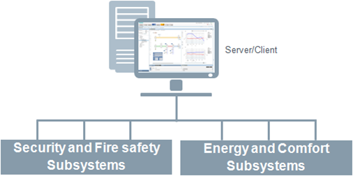
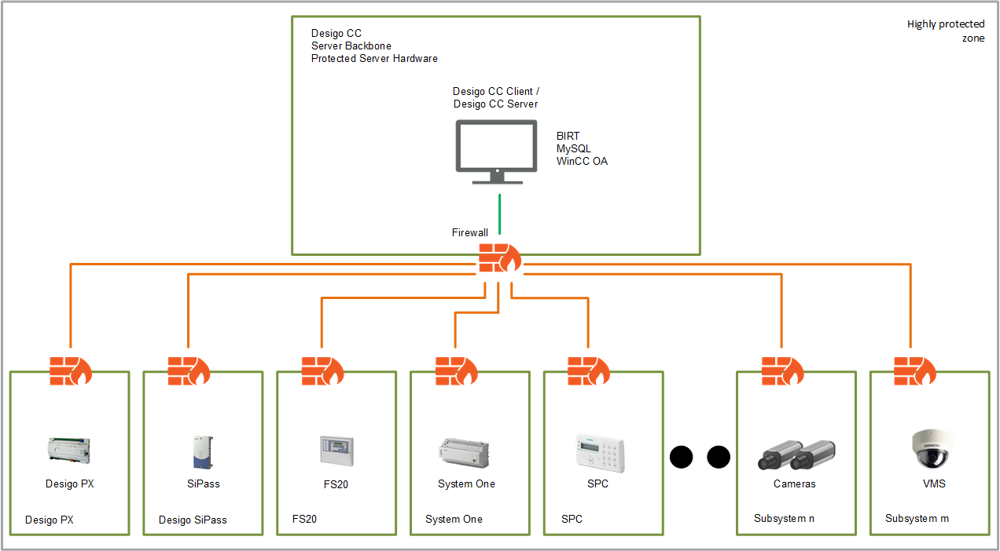
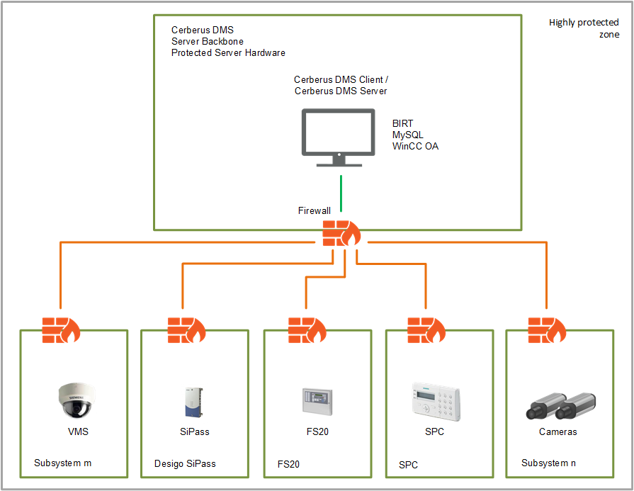

Stand-Alone (Single Station) System
Intended Use Case
This is the configuration choice in all cases where only one client is required, and system size is limited.
The Desigo CC server, database service and one installed client are deployed on the same hardware platform, which can be physical or virtual.
The field networks are connected directly to the Desigo CC server.

Show the Single Station Deployment Diagram


Security Certificates
For this deployment, the following applies with respect to certificates:
No certificate is required for the internal communication between server and client in the stand-alone station.
A local web server (IIS) may also be installed on the station to support, for example, mobile clients.
The communication between the Desigo CC server and the local web server (IIS) can be left unsecured (without certificates), since they are both installed on the same machine.
The communication between the web server and web-based clients must always be secured. Refer to the next sections about client/server scenarios.
Settings Reference
- Restoring a Project or Creating a Project from a Template
- Websites and Web Applications (if a local web server is installed).